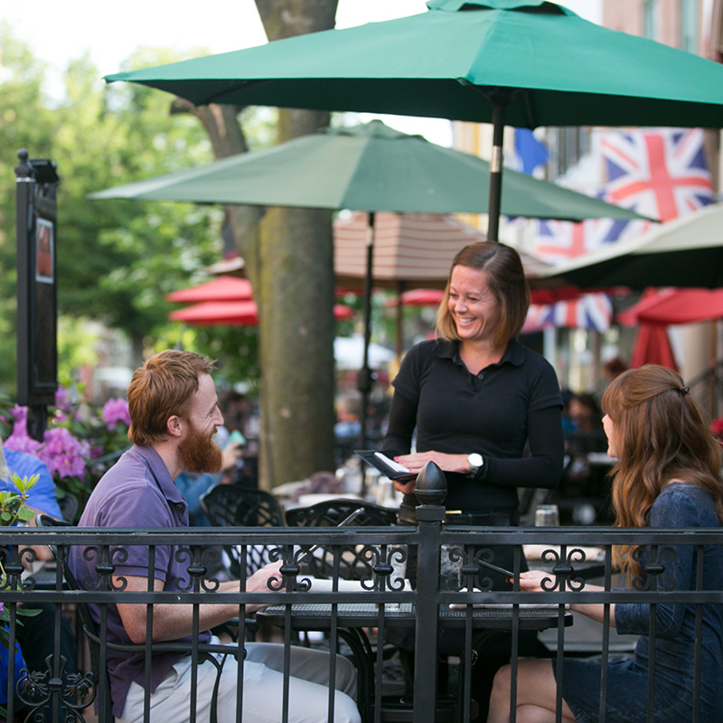
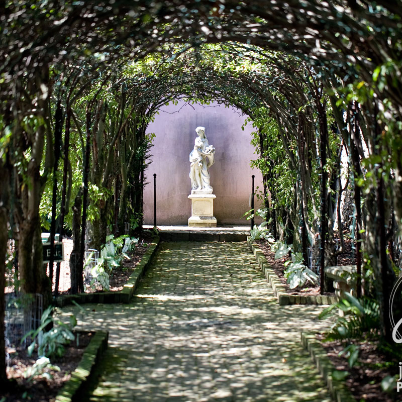
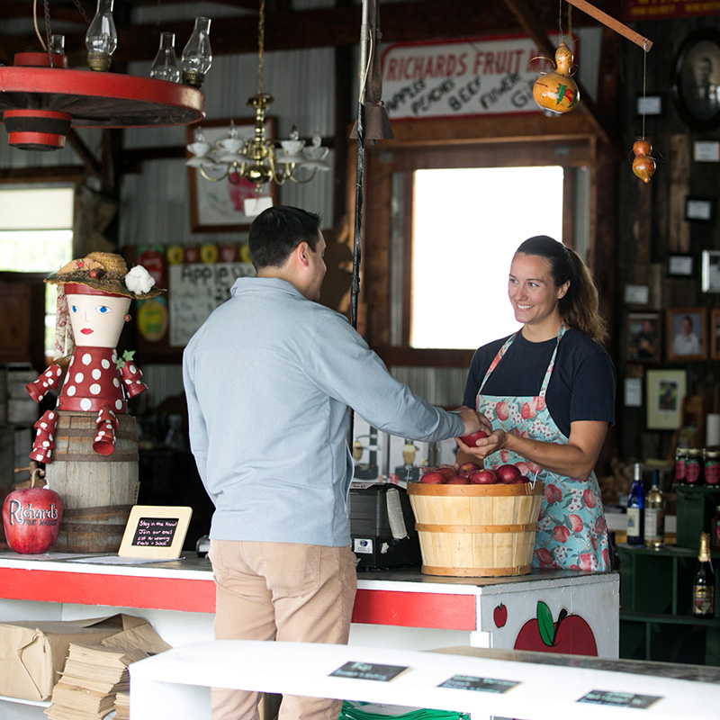

There's so much to do in Winchester!

Explore our Walking Mall
Restaurants, performance venues, and festivals alongside relics of our nation's early history.

Visit a Museum
Walk through the Glen Bernie Gardens at the Museum of the Shenandoah Valley, play with the kids at the Discovery Museum, or relive history at the Civil War museum.

Enjoy our Agriculture
We're the apple capital of the world! Pick some fresh produce and take in our mountain views.